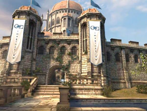

Unity Manual>Advanced>Practical Guide to Optimization for Mobiles>Practical Guide to Optimization for Mobiles - Graphics Methods
Practical Guide to Optimization for Mobiles - Graphics Methods
What are mobile devices capable of? How should you plan your game accordingly? If your game runs slow, and the profiler indicates that it's a rendering bottleneck, how do you know what to change, and how to make your game look good but still run fast? This page is dedicated to a general and non-technical exposition of the methods. If you are looking for the specifics, see the Rendering Optimizations page.
 What you can reasonably expect to run on current consumer mobiles:
|
 What you CANNOT reasonably expect to run on current consumer mobiles:
|
 Examples - How top-notch mobile games are madeShadowgunShadowgun is an impressive example of what can be done on current mobile hardware. But more specifically, it's a good example of what cannot be done, and how to get around the limitations. Especially because a small part of the game has been made publicly available in this blog post. Here's a basic rundown of things that Shadowgun does in order to keep performance up:
|
|

Sky Castle DemoThis demo was designed to show what Unity is capable of on high-end Android devices.
|
Bottom line - What this means for your gameThe more you respect and understand the limitations of the mobile devices, the better your game will look, and the smoother it will perform. If you want to make a high-class game for mobile, you will benefit from understanding Unity's graphics pipeline and being able to write your own shaders. But if you want something to grab to use right away, ShadowGun's shaders, available here, are a good place to start. Don't Simulate It, Bake It !There is no question that games attempt to follow the laws of nature. The movement of every parabolic projectile and the color of every pixel of shiny chrome is derived by formulas first written to mimic observations of the real world. But a game is one part scientific simulation and one part painting. You can't compete in the mobile market with physically accurate rendering; the hardware simply isn't there yet, if you try to imitate the real world all the way, your game will end up limited, drab, and laggy. You have to pick up your polygons and your blend modes like they're paintbrushes. The baked bumpmaps shown in Shadowgun are great examples of this. There are specular highlights already in the texture - the human eye doesn't notice that they don't actually line up with the reflected light and view directions - they are simply high-contrast details on the texture, completely faked, yet they end up looking great. This is a common cheating technique which has been used in many successful games. Compare the visor in the first Halo screenshot ever released with the visor from this release screenshot. It appears that the armor protrusions from the top of the helmet are reflected in the visor, but the reflection is actually baked into the visor texture. In League of Legends, a spell effect appears to have a pixel-light attached to it, but it actually is a blended plane with a texture that was probably generated by taking a screenshot of a pixel light shining on the ground. What works well:
What does not work:
|
{kind=link}
{kind=link}
But how do I actually do it?
See our Rendering Optimizations page.
Page last updated: 2012-11-06